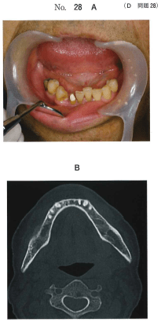

がん患者の苦痛は身体的苦痛だけではなく、4つの側面から成る全人的苦痛（トータルペイン）として捉える。
| 苦痛の側面 | 具体例 |
|---|---|
| 身体的苦痛 | 疼痛、呼吸困難、嘔気・嘔吐、倦怠感 |
| 精神的苦痛 | 不安、いら立ち、うつ、恐怖 |
| 社会的苦痛 | 仕事・経済問題、家庭問題 |
| スピリチュアルペイン | 生きる意味への問い、死への恐怖 |
| 段階 | 痛みの程度 | 使用薬剤 |
|---|---|---|
| 第1段階 | 軽度 | NSAID / アセトアミノフェン |
| 第2段階 | 中等度 | 弱オピオイド（コデイン）± NSAID |
| 第3段階 | 高度 | 強オピオイド（モルヒネ）± NSAID |
各段階で鎮痛補助薬（抗うつ薬、抗けいれん薬、ステロイドなど）を併用可。
コントロールに至るまでの期間は3〜5日以内が目安。
終末期口腔癌患者の緩和医療で正しいのはどれか。2つ選べ。
【解説】緩和医療の目的はQOLを高めることであり、疼痛コントロールはその中心的内容。a「延命を優先」は誤り（QOL重視）。b「歯科医師単独」は誤り（チームアプローチ）。c「根治的治療が主体」は誤り（苦痛緩和が主体）。
79歳の男性。右下顎の激痛と下唇の知覚鈍麻を主訴として来院した。3か月前から同部の疼痛を自覚していたが最近さらに増強してきたという。3年前に前立腺癌で加療を受けている。顎骨からの生検標本で前立腺癌の病理組織所見が得られた。初診時の口腔内写真（別冊No.28A）、CT（別冊No.28B）、FDG-PET/CT（別冊No.28C）及び骨シンチグラム（別冊No.28D）を別に示す。
QOLを考慮した緩和治療はどれか。1つ選べ。

【解説】前立腺癌の下顎骨転移であり、全身に多発転移がある（骨シンチ・PET/CTで確認）。根治は困難であり、QOLを考慮した緩和治療＝麻薬性鎮痛薬（強オピオイド）の投与が適切。抜歯や区域切除は侵襲が大きくQOLを低下させる。60Gyの放射線は根治照射量であり緩和目的には過剰。抗菌薬は疼痛管理にはならない。